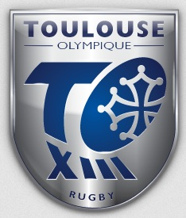

| En cours de thèse de doctorat à la FST University à Mulhouse | |
| Diplômée d'un Masters en STAPS à l'University de Toulouse (2025) | |
|  | Coach de préparation physique pour l'équipe de rugby TO XIII (1 year) |
 |
Coach de basketball pour plusieurs équipesTournefeuille AST Club (4 ans) |
|
Joueuse de basket au club sportif de Tournefeuille AST Club au niveau regional (8 years) |